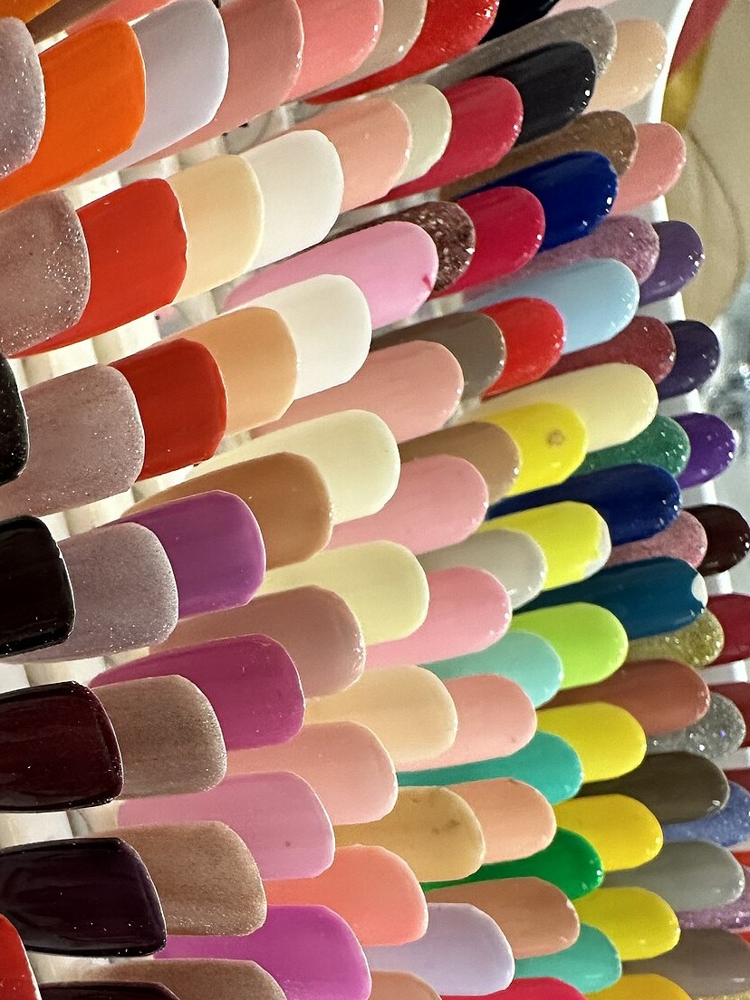
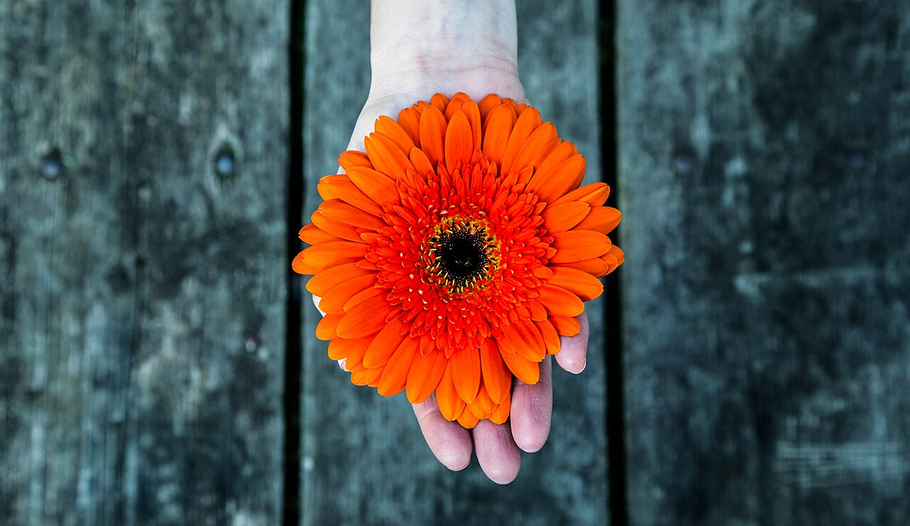
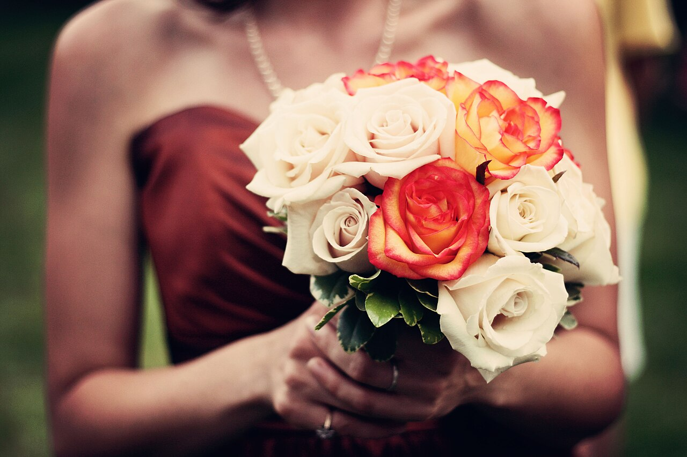
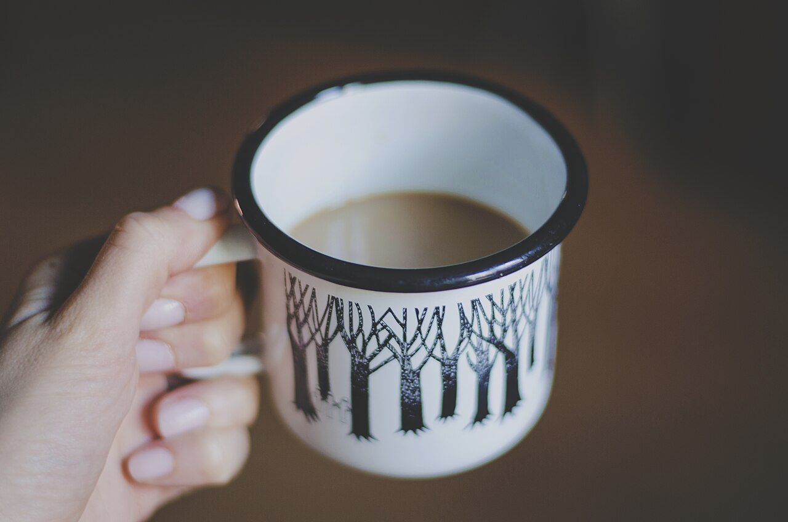
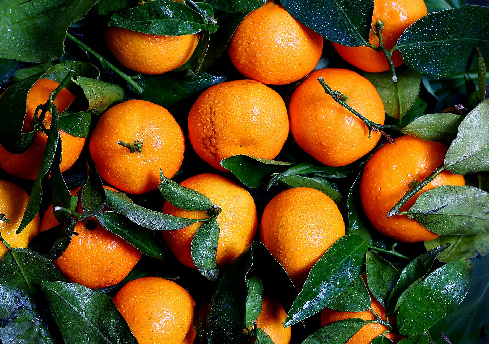

Salon de Sourire
指先から、口もとへ。
くちびるの端が、そっと上がる指先。
ネイルサロン サロン ド スーリール|熊本市中央区 新市街

Photo: イメージ Photo: イメージ
Photo: イメージ
 Photo: イメージ
Photo: イメージ
Sourireのこと
店名のSourire(スーリール)は、フランス語で「微笑み」。
ふと指先を見たとき、くちびるの端が少し上がる。
そんなささやかな気持ちのゆるみを、ネイルの時間でお届けしたいと考えています。
お仕事の合間にも、特別な日の前にも、気軽にお立ち寄りください。
 Photo: イメージ
Photo: イメージ
Promise
やさしい3つの約束
相談しやすさ
「どんな形が似合うかな」「こんなイメージにしたい」。はっきり決まっていなくても大丈夫です。お話を聞きながら、ゆっくり一緒に考えていきます。
清潔感への配慮
気持ちよく過ごしていただけるよう、お席まわりの清潔さを大切にしています。安心してご来店いただける空間を心がけています。
気分が上がる時間
手元が整うと、気持ちも少し明るくなります。ネイルを選ぶ時間そのものを、楽しいひとときにしたいと思っています。
ひだまり写真帖
(写真はイメージです)
Photo: イメージ
Photo: イメージ
Photo: イメージ Photo: イメージ
Photo: イメージ

Photo: イメージVoice
お客様の声
イメージ例
希望をうまく言葉にできなくても、ゆっくり聞いてもらえて安心でした。仕上がった指先を見るたび、ふっと気持ちが明るくなります。
※実際のお客様の声ではありません